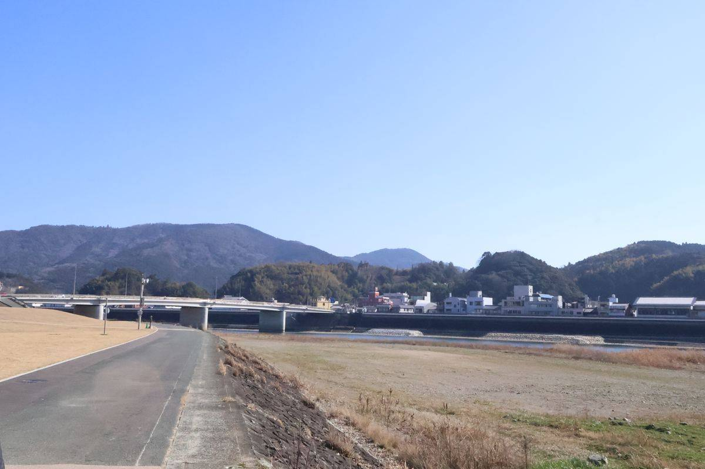

新企画・準備中
大洲に暮らす、普段はスポットライトの当たらない人たちに、話を聞いてみたい。 すごい実績や、驚きの経歴を探しているわけではありません。ただ、ここで生きている 「証」を、静かに残していきたいと思っています。

スマホとAIがここまで発達すると、大抵のことは一人でできてしまいます。実際、このHPも ほとんど一人とAIの力で作っています。でも、だからこそ思うのです。こういう時代だからこそ、 コミュニティセンターや地域の集まりのような、人と人が直接顔を合わせる場所の価値が これから見直されていくはずだと。
一人でできることが増えるほど、「個人」がどう地域と関わっているかが大事になる。 そう考えて、大洲市民の方に直接お話を伺うこの企画を始めることにしました。 「実はこの人、すごい人だった」というオチを求めているわけではありません。 普通に大洲で暮らしている人の、普通の日々や人生を、そのまま届けたいのです。
形式ばったインタビューというより、雑談に近い形で進められたらと思っています。 「こんな話でいいの?」と思うようなことこそ、聞かせてもらえると嬉しいです。
初めての方こそ、勇気がいることだと思います。無理にとは言いません。少しでも興味を 持っていただけたら、下のボタンから気軽にご連絡ください。「こんな人がいるよ」という ご紹介も大歓迎です。謝礼などは残念ながらご用意できませんが、大洲の記憶を一緒に 残していただけたら嬉しいです。